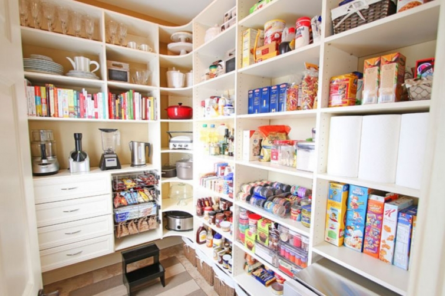
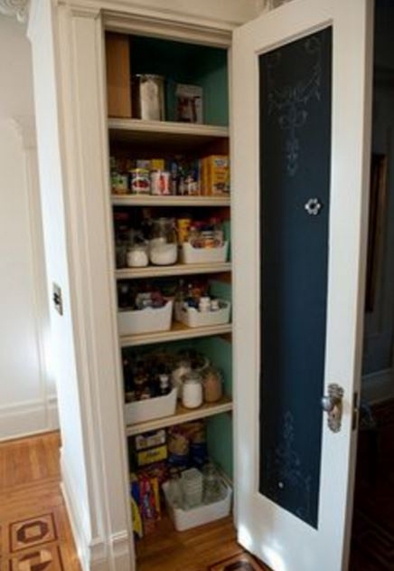

.png)
.PNG)
.PNG)
.PNG)
.PNG)
.PNG)
.JPG)
.JPG)
.PNG)
.PNG)


source
You know Pinterest can provide you with more ideas than you and your entire family could ever possibly use in your entire lifetime. It can also get your brain in a major daydreaming mode. So today, I thought we would take a look at some pantries that had me daydreaming when I was researching ideas for our pantry reorganization. Who knew food storage could be so pretty? 🙂
Let’s start with this small one at Brooklyn Limestone. Even though it is tight on space, she has utilized baskets and jars to keep things organized. That chalkboard painted on the inside of the door is also a great idea.
source
If I could build a pantry from scratch, the vertical dividers like those below would certainly be included in our design…along with the pull out drawers.

The next pantry makes great use of space with drawers, containers, vertical dividers, baskets, and even hanging shelves for the doors. The link below the photo will take you to a very good post on that blog about mistakes she made when doing her pantry. An interesting read!

Now let’s really get daydreaming with walk in pantries. This one even has glass front cabinets at the top!
Even though I like white for storage spaces, this green is beyond beautiful.
Can I just have this pantry for my kitchen?
Under cabinet lights are a smart idea in this next one with its barn door.
Another beautiful walk in with cabinets.
Let’s not forget to include a wonderful light in our pantry
(and jars!)
And how about a rolling ladder?
I really like the door going into this one with its frosted glass window.
When I first saw Craig Kettles’ pantry with all its narrow shelving and that antique ladder years ago, I fell in love with it. And to think that this one is in a lake house doesn’t hurt either. 🙂
There is room for cookbooks in this one.
Now we are really moving from merely a food pantry to a butler’s pantry with room to store dishes and even small appliances. (I told you we were daydreaming. 🙂 )
A window! I would love a walk in pantry with a window. I remember when I wrote I wanted a window in a clothes closet, and several of you told me that was a bad idea because the clothing would fade. Would a window in a pantry be a bad thing? I would adore all that light coming in.
This next one is the dreamiest of all the daydream pantries to me. Even if I had this one, I know it would not look like that because we don’t have all those pastel pink foods around here. But you must admit, it is gorgeous.
So I will choose this dream one. It has a window, bead board walls, space for food, room for tons of china, and a spot for my kitchenaid mixer and a few other small appliances. Perfection.
Perhaps in our next house. 🙂
Do you have a favorite?


.PNG)
Well, now I am drooling!! I did change around some things in mine thanks to your post. 🙂 I’ll have to wait to paint after Easter though. I have an additional closet in our garage converted to family room I call the “freezer closet” which has a floor freezer, shelves for small appliances, extra dishes, cookbooks, etc. It has a lot of room, but it needs cleaning out too! 😛
———————————————————————-
Yay! So glad you could get some organization done Gina. 🙂 Your freezer closet sounds like it is large and handles quite a few duties! I doubt it is fun to clean, but it does sound like a good storage space.
Have a great weekend!
Kelly
OMG I’m dead and I’m in the pantry’s paradise!! :-)LOVE all these beautiful pantry rooms! Thanks for sharing these beauties!
Xo
Claire
———————————————————————-
Yes you were in Pantry Heaven, Claire! 🙂 I’m so glad you appreciated the spaces as much as I did. Thank you for stopping by the blog.
Have a great weekend!
Kelly
Now, you have me wanting a pantry. When we built our house over twenty-five years ago (in my early thirties), I did something really dumb. I had the builder leave out the pantry in order to have a larger dining room. D.U.M.B! The dining room is still too small and I don’t have a pantry. (DiAnne has a great pantry like in your photos in her house.) I thought I would use our laundry room as a pantry but I added a sink and toilet and it just doesn’t seem right to put food in there. My favorite pantry you have pictured is the last one. I think I like it best because of the sets of dishes and glasses. I would love to have space to switch out my different sets of dishes more often. I also like the window in it and that is has space for the mixer. You have inspired me to reorganize my island. That is a start.
———————————————————————
Oops! Giving up a pantry was not a good choice (but I totally understand it if the room was too small.) Too funny about the food in a place with a toilet! I think I would feel the same way. That last pantry was perfect…you and I will have to draw straws to see who gets it. 🙂
Good luck with your island organization!
Kelly
Oh,my…… Sigh, sigh…… I’m dreaming. This is so nice. I do have a “pantry” cabinet that is deep with pull out shelves in the front. I’d love to have a “room” type pantry. Your pantry is great too. Thanks for the dreamy pictures. Now I want to go clean out my cupboards. HAHA!
———————————————————————-
Yes, those were some dreamy pantries! (My reality won’t look like them.) If you have deep cabinets, those pull out shelves are the way to go. So glad you have them Kaye Ann. I hope you had good success with cleaning out your cupboards. LOL
Kelly
I love the green pantry—and the one with all of the Pink food! I can not wait for my new pantry to be finished!
xo, Lissy
———————————————————————
I hope your new pantry (and everything else) gets finished quickly Lissy. You need the one with all the pink food! 🙂
Kelly
All of these pantries are wonderful it would be hard to choose one. I always consider a pantry to be where we keep food and a Butler’s pantry one for extra dishes and maybe a coffee bar. I would love a walk in pantry (window is optional) and a separate Butler’s pantry. The things that people can come up with is amazing. I love the way our house looks but I bet if I could have a decorator come in they would transform everything differently and I would love that.
———————————————————————–
Yes, that is the correct distinction between the two, and when I win the lottery we will have both! 🙂 I would be thrilled to have one little space that could handle both. If you love the way your home looks, then you don’t need a decorator to come in. You must be doing a good job yourself! 🙂
Kelly
Well there’s nothing like an organized pantry that’s easy on the eyes! I’d be delighted with any of these! However, if I had to choose, the green room is my pick.
You did a wonderful job on yours. One can spend all day organizing a pantry, at least I could in mine! Feeling like Spring here, so perhaps its on my organizing radar!
———————————————————————
Another fan of the green one! I am surprised by how many of you like that one best. I am drawn to white ones (and really any white space for organizing) but that green one is absolutely beautiful. Thank you for the compliment on ours. I think it turned out nicely. It feels like spring here as well, so spring cleaning is the next thing on the list. Enjoy your weekend Anita!
Kelly
Hi Kelly. Thanks for more great inspirational pictures … I’d be very happy with any of them. Obviously in an ideal world/house we’d all have perfectly designed pantries making organisation and presentation so easy 🙂 Wheras most of us are trying to get the best we can out of what we have, with a little creativity. Having a husband that is good at carpentry, like yours is a big plus! I think, practically, the depth of the shelving rather than the size of the overall pantry seems the most important feature .. Although all of the above are aesthetically appealing! There’s some great ideas in all of them that we can adapt and use. Thanks again Kelly, a great post!
Have a good week!
Rosemary
———————————————————————
Yes, in an ideal world we would all have a perfect pantry! And you are right about the depth of shelves making it so much more usable….you just have to have enough of them. I’m so glad you enjoyed the post Rosemary. Have a great weekend!
Kelly
All the pantries are gorgeous and I would be extremely happy with either one. Thanks for this post and photos that I will pin into my dream kichen board.
———————————————————————-
Aren’t they gorgeous Velia?! Thank you for reading the post and taking the time to leave a comment. I appreciate you!
Kelly
Dreaming is fun.. I too would love to have a window in my pantry and like you.. my closet, just imagine how fresh your clothes would smell! I really like your pantry.. it’s more realistic but then again.. it is fun to dream!
———————————————————————–
Yes, it is fun to dream, Cindy! 🙂 I love windows, so in my dream house there will be one in the pantry.
Kelly
Kelly, your newly reorganized pantry looks great! Isn’t it fun to have time to do things like that! How funny is this…. I was scrolling through these great looking pictures of pantries and when I got to the 6th picture I thought … Well, that person copied the pantry like the picture hanging up in Al Platt’s office. I clicked on source and it IS the the pantry pictured in his office. I went to a political rally there last Friday and he has huge pictures on the wall showcasing great looking rooms like this one.
Happy almost spring!!
———————————————————————-
Thanks a bunch Katrina! How funny that you spotted a photo of one of the pantries and knew the architect! That architectural firm does great work. 🙂
Kelly
Aren’t these wonderful? My favorites are the green butler’s pantry (done by a local designer Ambiance Interiors) and the last one. Alas, I have a teeny tiny kitchen in our cabin so I would have to add a wing onto the house! However, I am excited because a cabinet maker is making us a roll-out shelving unit for the nine inches beside the refrigerator. You gotta use what you have!
———————————————————————
Carolyn, it sounds like you are making the best use of all the space you have. Love that you will have a roll-out unit by the refrigerator! I know that will come in handy.
I loved that green one too. Your local designers did a fantastic job on that one!
Kelly
Oh, Kelly, aren’t these all wonderful? I think my favourites might be the ones with the rolling ladder and frosted glass and the one with a window. Just imagine the kitchens with these pantries! I want to recreate yours, loved the storage containers and tags.
——————————————————————–
Thank you Tricia. Those rolling ladders really add to the nostalgic look of the space (plus think how handy they would be!) You are so right about the kitchens. If the pantries are this nice, the kitchens must really be something! 🙂 I am sure you can recreate our pantry…you just need those storage containers (or similar ones) and some baskets.
Kelly
Talk about dreamy. I would love to have a walk-in pantry. I’ve had one in my past and it makes finding what you’re looking for so much easier! Great examples, Kelly, I’ll be pinning these to my dream house board.
xo,
Karen
———————————————————————-
Me too Karen. A walk in pantry is just so very nice. Glad I could provide more pinspiration for you! 🙂
Kelly
Pantry envy of the gigantic type! Wouldn’t a walk in pantry with a screen door just be the cat’s meow? One my favorites is Emerson Farm’s featured on Design Sponge. (http://www.designsponge.com/2010/03/sneak-peek-emersonmade-2.html). Love the glass jars.
——————————————————————-
Oh yes! I have wondered about doing that here, but I think double doors with frosted glass might hide the contents better. 🙂 I almost included the Emerson pantry in this post. It IS a beautiful one with all those jars!!
Kelly
Those are gorgeous pantries…I like parts of all of them. The reality is my 2 pantries, while lots smaller will have to suffice. We are in our last home…hopefully! But it sure is nice to dream! 😉
———————————————————————
It is nice to dream. I don’t know for sure if this is our last one, but I am going to keep saving ideas in case we one day build a smaller home. I am glad your 2 pantries meet your needs Donnamae. 🙂
Kelly
I have absolutely loved your blog for a while now, but these pantries had to originate in Heaven! OMGee! I cannot imagine having anything like this, although I once had a wonderful walk-in that was a blessing. I forwarded this one to my brother and a cousin who photograph their pantry-organizing days to share with each other (from a distance of several states apart in the Midwest). They may weep over this entry. Many thanks! You made my (our) day!
———————————————————————–
I can’t imagine having some of these myself. Some are larger than my kitchen! Thank you for sharing the blog love Mary Ellen. I hope your relatives enjoy the post (and find some ideas that they can use.)
Kelly
What is it about row upon row of organized canned goods, spices, containers, etc., that just makes us happy? I love these pantries. I do adore the dreamy one too. You could have it with your red packaged goodies switched with the pink. The one that would get the best overall award from me would be the green one though. Perfect! It’s fun to dream. Thanks, Kelly!
Sherry
———————————————————————
Organization is a good thing. It means no stress, and that is why it makes us happy to see it. (Or at least that is my theory. 🙂 )Yes, I could swap out all that pink for my red, but it is the softness of that pink that makes it so pretty to me. That green was definitely perfection. It should get some kind of design award!
Kelly
Super great blog entry today. But I first read Pastries instead of Pantries…guess you know where my brain is! I had a fabulous pantry in our Nairobi home. But it wasn’t glamorous but functional. How I miss it! every home should come with one in my world!
———————————————————————-
Oh yes, I can tell what you are thinking about! Functional is what a pantry should first and foremost be…the pretty is just icing on the cake. And I agree with you that every home should come with a pantry…a large one! 🙂
Kelly
Sometimes I think Pinterest exists to make us all feel totally inadequate and jealous. In fact I told my MOPs moms that I thought they should just take Pinterest off their computers as it makes most of them feel that they are not supermoms. I told them I was so glad that it was not around when I was a young wife and mom. My sister in law has a lovely pantry that gives me total pantry envy. But then I remember that I do not cook or bake as much as I used to do so my little pantry is perfectly fine.
———————————————————————-
Aw, you have to take Pinterest with a grain of salt…know that most everything on there is set up with assistants and professional photographers. No one can do it all, so why even bother thinking you can? I am a very “visual learner” so I love Pinterest even if I don’t attempt 99% of the things I pin. I laughed out loud at your “but then I remember that I do not cook or bake as much as I used to!” Yep, that does make a difference in whether or not you need a pantry..or even cookware! LOL
Kelly
Well, we won’t have a next house so these are all a big dream for me! Right now we have 2 TEENY pantries that drive me CRAZY! My hubby built us a pantry in our 2nd house that was a DREAM. It was only a foot deep but about 7 feet long with bypass sliding doors. It was the best pantry I have ever had.
———————————————————————-
7 feet long! Wow I bet that WAS a dream pantry, Pinky! Too bad you can’t have another one like that in your current house. 🙂 If/when we ever build again, I know storage space is certainly going to be at the top of the list – even if we will be downsizing.
Kelly
SWOON!
Next to hot rollers, slide-out drawers are the greatest invention to man!
———————————————————————
That and Magic Erasers! 🙂
Kelly
I love yours the best! 😊 But out of these- the one you liked with the window!! I really enjoyed these posts on pantries. I kept enlarging the pictures to see what was in the containers AND trying to read the cookbook titles!! You know how curious I am- “nosey josey” here!! I am in the midst of putting all the items from beach condo in it’s proper place and reworking my pantry so this is very timely. I have converted a closet and cabinets in my new laundry room into a storage area for extra serving pieces plus holiday or cooking containers I don’t often use. Missing the beach already– but NOT Bike Week activities and noise!:) Beautiful weather here–but not looking forward to hot weather any time soon!
———————————————————————-
Aw you are sweet Louvina. 🙂 I enlarge pictures on my computer too…got to see all those details! LOL I know putting everything away is not fun, and I hate that you are not going to be at your beach place anymore. I am wanting to see sunshine at the beach…hopefully soon. Good luck with all your organizing!
Kelly
Sweet moments dreaming for sure. I love the one with the narrow shelves, nothing gets lost. I have deep shelves in my pantry closet and I am not sure how to organize them. I keep trying. Love your blog.
——————————————————————–
Thank you Lynne. I agree with you about the narrow shelves being so much more usable for a pantry. Deep shelves are a challenge. That is when I would want those pull out drawer units to make it easier to find things.
Good luck with yours!
Kelly